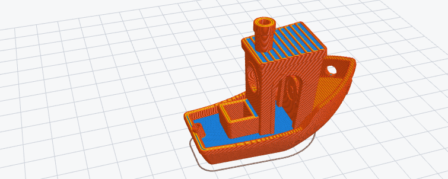
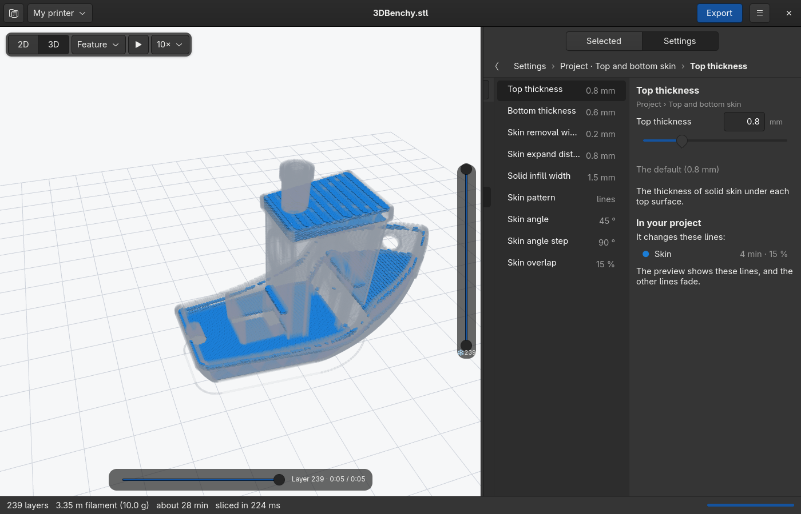
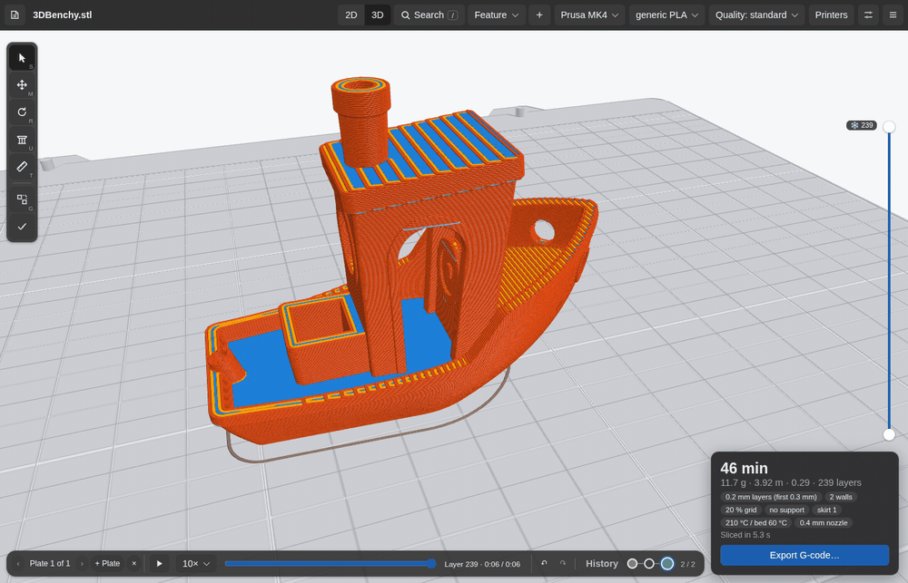

Documentation
zslice
A slicer for FDM 3D printers, written from scratch in Zig. Click any line of the preview to see what it is and why it prints the way it does. It slices fast enough to slice again while you drag a slider. And it runs in your browser: try it at zslice.beetlebug.org, with nothing to install.
Get started Settings Embed the library How a slicer works Source on GitHub

The documentation
Features
Fast
- A 3DBenchy (239 layers) slices in about 340 ms, and the 3D view shows it at once.
- A change of a setting slices only what the change needs. A new infill value takes about 20 ms on a 108-layer part; a new wall count takes about 120 ms.
- The slicer uses all CPU cores but one. It keeps its work memory in arenas, so a slice uses little memory.
- A watchdog writes the stacks of all threads to a file if the window stops for 3 s. So a rare hang can be found and fixed.
Click a line, see why
- Click a line in the 2D or 3D preview. The panel shows what the line is (for example "Outer wall · layer 97"), its planned and real speed, its flow, and only the settings that change it.
- Focus a field, and the panel explains what that setting does to the selected line, with its numbers: "50 % of 150 mm/s = 75 mm/s planned. It prints at 67 mm/s: the layer is short, and it slows to cool."
- The view shows all lines that the setting changes, and the selected line stays yellow.
- Use the arrow keys or h, j, k, l to go from segment to segment in print order, or to the nearest line on the layer above or below.
Settings for one layer, or for a range of layers
- Each change in the panel is for the whole part, for this layer, for this layer and up, or for this layer and down.
- For example: slower outer walls for the 10 layers of a thin tower, or a new skin direction for one layer.
- A changed layer shows a reset button. The changes go into the 3MF file of the plate.
A settings browser that shows what each setting does

- Three columns: sections, settings, and help, as in a file manager column view.
- Select a setting, and the preview shows the lines that it changes. The other lines fade.
- Each feature in the help ("Outer wall", "Skin") is a link to all settings of those lines.
- Sliders with sensible ranges, units on all values, and speeds as a ratio of what the printer and the filament allow. A ratio shows the speed that it gives: "50 % = 75 mm/s".
A preview that looks like the print

- The 3D view draws each line as a bead of the real width and height. Skin lines are pressed flat, and connected lines look connected.
- Color by filament, feature, speed, flow, layer time, or line width.
- A two-knob layer slider: the top knob is the top layer, and the bottom knob cuts away the layers below, so you can see inside a part at any height.
- Replay the print, or drag the scrub bar to move the nozzle through a layer.
- Seams, travel moves, and retractions show as marks.
Slicing
- Walls: classic, or Arachne (walls that change their width to fill the space between them). A hidden seam goes into a corner that stays in place from layer to layer, or to the back where it is hard to see. Gap fill closes the narrow areas between walls and in the skin.
- Skin: lines, monotonic (each line lies against the line before it, for an even top surface), or concentric. Skin expand distance and skin removal width remove gaps and thin strips.
- Infill: lines, grid, triangles, trihexagon, cubic, gyroid, honeycomb, concentric, zigzag, flow, and lightning (branches only under the tops). A list of angles for each layer, infill that stacks the same on each layer (for a grille), and combined infill (one tall bead every N layers).
- Bridges: straight lines across the air, anchored at both ends, slow, with the fan on.
- Ironing.
- Support: grid or tree, with interface layers. Tree support reaches into deep, narrow holes.
- Combing: a travel inside the part goes around holes and does not retract.
- Cooling: a minimum layer time, by a slower print or by a cooling lap (the nozzle moves away while the fan blows on the part).
Plate, files, and printers
- More than one part on the plate: Ctrl+click selects a part, Ctrl+drag moves it, and Ctrl+wheel turns it. "Smart placement" turns each part for less support and packs the plate; a part can also be placed for less support only, or to be strong along an axis, and turned, scaled, or put down on a picked side.
- Shift+click adds lines to the selection: a change for "This layer" goes to the layers of all of them.
- STL and 3MF files. A 3MF save keeps the parts, their places, and their changes.
- Printers: OctoPrint, Moonraker (Klipper), Printdeck, and USB serial. Send a file, or send it and print. The Printdeck link reads the filaments of the printer. Moonraker and USB are not tested on real printers yet.
- Profiles for the machine, the filament, and the project, in TOML, with inheritance. A Cura profile can be imported.
A library first
- One core in Zig, with a C API (
include/zslice.h,include/zslice-app.h) and a WebAssembly build for the browser. - The GTK4 app for Linux is a thin shell over the core. So is the web app: try it at <https://zslice.beetlebug.org/>, with nothing to install.
- Each module explains its algorithm in its header comment. The code is also a book about how a slicer works.
Build
zslice needs Zig 0.16. The Linux app also needs GTK 4, libsoup 3, json-glib, Meson, and a Vulkan driver.
zig build test # run the tests
zig build -Doptimize=ReleaseFast # the command line tool: zig-out/bin/zslice
zig build lib -Doptimize=ReleaseFast # libzslice.a, libzslice.so, zslice.h
zig build wasm # zig-out/web/zslice.wasm and zslice.mjsThe Linux app:
cd linux
meson setup build # builds the core too (zig build lib)
ninja -C build
build/zslice-gtk part.stlSee linux/README.md for the packages.
Command line
zslice slice part.stl -m generic -f generic-petg -p fine -o part.gcode
zslice slice part.stl -o part.gcode -s project.wall_count=3 -s filament.nozzle_temp=220
zslice preview part.stl --layer 20 -o layer20.svg
zslice settings # all settings and their defaults
zslice profiles # the built-in profiles
zslice demo demo.stl # write a test partSettings
The settings have three groups, with different owners:
machine.*: facts about the printer. Examples: the bed size, the nozzle, and the speed limits.filament.*: facts about the material. Examples: the temperatures, and the maximum flow that the hot end can melt.project.*: what you want for this part. Examples: the layer height, the walls, and the infill.
Each group can come from a profile file (TOML), with inheritance (extends) and overrides. See Profiles.
A project does not set speeds in mm/s. It sets a ratio of the speed that the machine and the filament allow. One project then works on different printers and with different filaments.
Embedding
Zig:
const zslice = @import("zslice");
var mesh = try zslice.Mesh.fromStl(gpa, stl_bytes);
defer mesh.deinit(gpa);
var settings: zslice.Settings = .{};
try settings.set("project.wall_count", "3");
const stats = try zslice.slice(gpa, &mesh, settings, writer);C (include/zslice.h):
zs_mesh *mesh;
zs_mesh_load_stl(bytes, len, &mesh);
zs_settings *settings;
zs_settings_new(&settings);
zs_settings_set(settings, "project.wall_count", "3");
zs_slice(mesh, settings, write_callback, user_data, &stats);JavaScript (web/zslice.mjs):
import { load } from "./zslice.mjs";
const zslice = await load(wasmBytes);
const { gcode, stats } = zslice.sliceStl(stlBytes, { "project.wall_count": 3 });License
AGPL-3.0-or-later. See LICENSE. The sources that zslice uses, and the licenses of the code in its binaries, are in REFERENCES.md.
The screenshots show a slice of 3DBenchy by Creative Tools, licensed under CC BY-ND 4.0. The model is not in this repository.